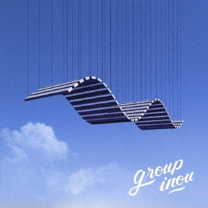
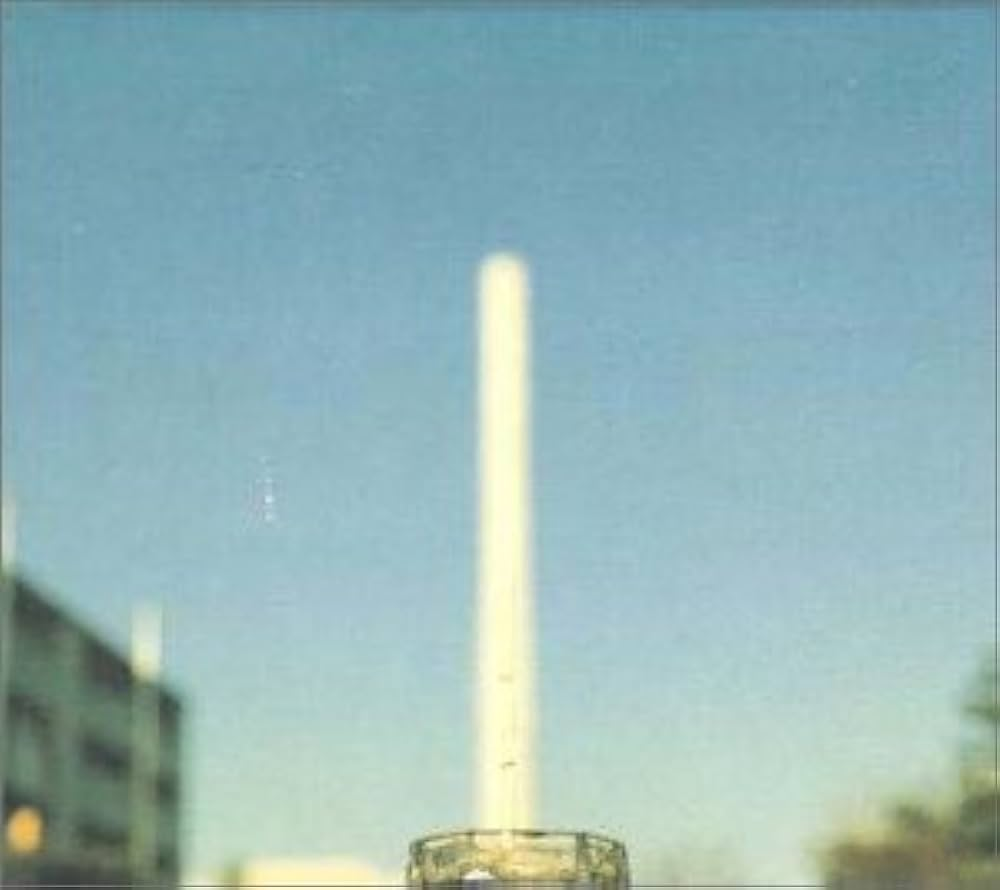

好きな邦楽アルバムを考えたい
修士も無事取れてジャーナルもちゃんと提出できて，本格的に仕事が始まる四月まで時間があるので(2週間)，今までやってみたかった好きな邦楽アルバムをまとめるやつ，を，やる🍟．
せっかくなので名盤ランキングではなく好きなアルバムという視点でまとめる．
例えば名盤という視点ならジャックスの「ジャックスの世界」は間違いなく入ると思うけど正直このサイケっぽい GS はそこまで好きではないので除外する，みたいな感じ
ジャンル混合の異種格闘ではあるけどボカロだけはそれだけでリストが作れるので除外する．
※ 全然途中なので随時追加していく
1. King Gnu / CEREMONY

king gnu 自体あまり興味なかったけどいざ聴いてみるとやっぱ良い
というか常田がアクモンとかレディへが好きらしいのでやっぱり聴かず嫌いせずに聴くべきだったんだろうな
シングルとか EP みたいな小さいサイズの仕事をリリースするアーティストが多い中で物語性のあるアルバムを出せるのは king gnu の人気と実力が相まったものだと思う
2. GEZAN / 狂(KLUE)

キワモノ感があって極端に尖ったオリエンタルな曲が多いから冷たい雰囲気を感じたけど，聴いてみると意外と人間味があって優しいメッセージの曲が多い
「東京」がピックアップされることが多いけど，「東京」の良さは「東京」以前の「EXTACY」とか「AGEHA」みたいなストイックな曲から「Soul Material」からだんだんと優しさが見えてきたあたりで刺さってくるものだと思うので，ぜひアルバムで聴いてほしいと思っている
関係ないけど apple music でワールドミュージックに分類されてて笑った．分からなくもない
3. cero / Obscure Ride

日本人がブラックミュージックを作ろうとするときはどうしても黒人への憧れみたいなものが全面的に出てしまって，ビジュアルばかりに注目してしまったりとか（ドレッドヘアーみたいなもの．黒人文化への配慮が欠けてるみたいな批判もあるけど立派なアプローチの一つだと思う．），日本ぽさもファンクっぽさも失ってしまったりすることが多々あると思うが， cero の Obscure Ride はあくまでブラックミュージックの模倣であることを認めつつ，都会的な日本人ぽさを失わずにファンクを作れていると思った．小沢健二とかが出たときもこんな感じだったのかな，少し違うか
4. andymori / andymori

曲風以上に歌詞が文学的だなと思うことが多い．
文学的というか「実は何も考えてないのか？」みたいに思うくらい抽象的な歌詞に出会うこともある．Smells Like Teen Spirit みたいにガレージの激しさと感覚的な歌詞をやりたかったのかなと思うこともある．
「僕が白人だったら」がめちゃいい．欧米コンプレックスはアジア人が書くと一気に切実になると思う．
ちなみに「和製リバティーンズ」にはあまり納得していない
5. ZAZEN BOYS / らんど

新譜だからか？
ナンバガのときもそうだったけどこのギターの遠さは他のバンドにない感じがして良い．今更悪い機材を使ってカウンターすることもないだろうからそういう EQ をかけてるのかな？
ライブに行きたい
6. MONO NO AWARE / かけがえのないもの

4~5 年前くらいにアルバイトの通勤でずっと聴いてた記憶がある．
「言葉になかったら」は冗談抜きで邦楽全体の中でも上位に入るクオリティだと思う．ロックとかシティポップに簡単に寄り添わない曲調が良く刺さる．
コンセプトアルバムが減っているなかで長編を書いてくれるのは嬉しい
7. 柴田聡子 / Your favorite things

新譜だからか？2
かなり色んなことをやろうとしているけどゴチャゴチャになっていない上に，しっかり聴かなくても楽しいというポップスとしても完成されているアルバムだと思う．
8. KANDY TOWN / KANDYTOWN

日本語ヒップホップは本当に聴かないんだが KANDYTOWN はすごく刺さった．ラップの歌詞って「こんなワルをしたゼ」とか「アイツの曲はカスだゼ」みたいな海外ヒップホップの完全下位互換みたいなものしかないと思っていたけど，KANDYTOWN は良い意味で理性的というか日本人の方向性とうまく噛み合っていると思った． IO がマジでかっこよすぎる
9. sweet william × jinmenusagi / la blanka

sweet william のトラックが良すぎる．エモいとはこのこと．．．
jinmenusagi は知り合いに 「so goo」を教えてもらってからよく聴く．
ラップバトルも jinmenusagi か DOTAMA が出てれば見るくらい好き．
聴き手に寄り添ってくる歌詞というか対等で話してくれてるような歌詞が良い
10. ゆらゆら帝国 / SWEET SPOT

「空洞です」が傑作に上げられることが多いけど正直あまり咀嚼できてない．
「SWEET SPOT」はまだゆらゆら帝国のサイケな感じが前面に出ていて聴きやすい．
「タコ人間」みたいなわけ分かんない音色でわけ分かんない歌詞を歌うの坂本慎太郎しかできないだろうなと思って聴いてる．「ソフトに死んでいる」とか最初ビックリした
11. 銀杏BOYS / 君と僕の第三次世界大戦的恋愛革命

パンクは歴史で変わるなあというのを銀杏BOYSで感じた記憶がある． inu とかアナーキーみたいに政治色強めのパンクも当時の鋭い雰囲気を感じられて良いが，2000年代に流行した青春パンク，つまり銀杏BOYSみたいに恋愛とか心情を大声で吐露する表現も素晴らしいと思う． 代わりに叫んでくれる感じがするし，歌詞が自分の感情と合致していたらなおさらだと思う． 自分が初めて恋愛パンクに出会ったのは，おそらく小学生時代のガガガSP「はじめてきみとしゃべった」だったが，今聴いても小学生時代の恋愛感情を思い出してノスタルジーになる．
話は銀杏BOYSに戻るが，すごくアニソンチックなメロディとナンバガみたいな冷たいメロディを感じられる． うまく言い表せないが，パンクで吐き出したい心情って整理されていないことが多いと思うから，その散らかり感が銀杏BOYSのエンジニアリングと歌唱と作曲・編曲・歌詞にマッチしているんだと思う．
「エンジェルベイビー」が一番好きです
12. レイハラカミ / わすれもの

父，レイハラカミ，久保帯人，ユニコーン，Perfume など，自分の好きな有名人は偶然にも広島出身なことが多い． レイハラカミは特に自分が最も敬愛する音楽家の一人でもある． (ちなみにレイハラカミはその後京都で主に活動をする．)
レイハラカミが「unrest」をリリースした時期から，エレクトロミュージックがだんだんと変化しているように見える． もちろんレイハラカミがその潮流の主役であったわけではないが，この潮流に乗ったデビューアルバムだとは思う． エレクトロはダンスクラブで回しやすいように，トラック単位での流通性が求められていた． こういったダンサブルなトラックを，クラブやダンスフロアから離れた一人だけの個室で，特にアルバムでまとめてリスニング体験を向上させようみたいな作品が登場し始める． この時期のアンダーグラウンド環境は知らないが，レイハラカミをはじめとするトップレイヤーのアーティストの流れでもあることから，流行的に表面化しているのだと思う
この後「opa*q」や「red curb」などがリリースされるが，「unrest」はもっともダンサブルなアルバムの一つだと思う． 「unrest」後はだんだんと複雑に，抜け感が悪く，浮遊感が増していく． 「わすれもの」は比較的聴きやすいほうだが，「にじぞう」を聴いたときのインパクトが忘れられない． （自分が最初に聴いたレイハラカミ作品だし，エレクトロミュージックに傾倒するきっかけになった曲のうちの一つだからだとは思うが．．．）
40 歳で急逝． 「広い世界とせまい世界」はレイハラカミが映像作家として活動していたときのアルバム作品をリマスタリングしたもので，没後にリリースされた． これがリリースされた文脈はよく知らないが，アーティストの没後にリリースされる作品はあまり好きではない． 当人がリアルタイムで監修できないのにどこまで追い込めるんだろうか．
13. NUMBER GIRL / SAPPUKEI

ナンバガの青さ，金属感，線の細さ，煙たさって何からきているんだろう． 都会のナウいエンジニアリングに反抗するためにあえて雑な MIX, 録音をしているらしい． この音の遠さが線の細さとかに影響しているんだろうか メロディーとかリフは結構エモい感じなんだが，多分このエモさとエンジニアリングが合致していなくて奇妙な浮遊感があるのか，と思っていた時期もある．
今更ナンバガ聴こうぜ！！！とはならないが，定期的に戻りたくなることもある． かといって別に青春を構成していた，とかそんなアツい話もない． まあスーパーカーとかみたいな共通認識に似た何かだろうな．
「鉄風 鋭くなって」が好きです
14. BUMP PF CHICKEN / Jupyter

青春すぎ
まだ現役だからレジェンド感は薄いが，今の邦ロックバンドの礎となるバンドだと，誇張表現無しに思っている．
もちろんメロディーとか編曲の良さもあるが，歌詞が良い．
辛いときとか悲しいときは，寄り添ってくれる歌詞よりも自分より上位の何かすごいものから諭してもらう方が好きなんだが，バンプはそんな感じがする．
あと藤原が結構ヤバいやつっていう背景もそれなりに関係していると思う
ユグドラシルも良いが，Jupyter の方が素朴で好き
「メロディーフラッグ」が好きです
15. 椎名林檎 / 無罪モラトリアム

椎名林檎も東京事変もそんなに聴いていないが，このアルバムだけはよく聴いている． 曲もいいんだがこのジャケットすごいよな，生成 AI って言われても納得できる感じがする．
16. Hi-STANDARD / MAKING THE ROAD

MAKING THE ROAD はね，NOTHING からがいいんですよ (分かった口)．．． パンクだけのやつだと最初は思っていたが意外と技巧的だしロックパンクに頼らない曲風もある．
17. THEE MICHELLE GUN ELEPHANT / Chicken Zombies

ミッシェルでどのアルバムが好きか，というのはかなり人によってばらつく気がします． 最初は GEAR BLUES が大好きでした． 全部聴きやすくて声も一番バランスがいいと思います． ボイルド・オイル，名前も曲もカッコよい． その後 High Time, そして Chicken Zombies に至ります．
でも正直これ以上掘れない，というか自分の趣味ではないなという印象があります． パンクロックを知らなすぎるからだと思います． でもパンクロックを知らなくてもここまでハマれるんだなあという感じで TMGE の偉大さを感じました (小並)
やっぱりバードメンが一番好きです
18. Cornelius / The First Question Award

小山田圭吾は心底嫌いだが，曲は良い．
FANTASMA が最も人気だが，個人的には渋谷系っぽい The First Question Award が好き． Flippers Guitar とは違ってロック寄りというかマッチョになった気がする．
渋谷系もテクノも大好きだからその両取りである Cornelius はいいに決まってるんだよな．．． 「サウナ好きすぎ，より深く」は最悪． Cornelius のくせに流行に乗るな
Point は結構いい．．． 「Tone Twillight Zone」よすぎ．．． こういうのばっか作ってくれ
19. 小沢健二 / LIFE

一生青春おじさんとか言われてて笑ってしまった．
小山田とは変わってテクノ風味が一切なくてずっと J-Pop渋谷系をやってくれてる． Eclectic は若干テクノか？と思ったけど戻ったな．．． 「∞」 は結構いいと思う． 刹那 の「さよならなんて言えないよ」は結構戻ってきた感あって好きだ
が，結局 LIFE しか聴かない． 「ドアをノックするのは誰だ？」が好き
20. INU / メシ喰うな

いかちい
「ダムダム弾」が好き．
「高校で習うた」の切り替えというか，二回目は笑いながら言ってるのに三回目が急にキレてるの，正気の沙汰ではないと思う．
町田の声というか，つぶれたヘビみたいな叫びが余計にメッセージ性をもって伝わる．
世間の動向とか，政治とか暮らしみたいなのが直に反映されているんだろうから，当時の雰囲気を知らないと楽しめないと思っているが，最近の不安定な時世を鑑みるとそうでもないのかな
ライブは見てみたが，下手だった．
でも，パンクは下手でなんぼみたいな，こういう表現しかできない人を救う優しいジャンルだと思ってるのでそれでいいんだと思う．
自分みたいにパンクを正しく理解できない人が批判するジャンルではないんだと思う．
21. スピッツ / 名前をつけてやる

スピッツのどのアルバムが好きかを聞く占いがあるらしい
CTCLE HIT 1991-1997 が一番最初に聴いたアルバムだと思う． そこからドハマりしたわけではないが，スピッツ大好きな友達の影響で細く長く聴いていた．
新しめのアルバムはあまり把握していない． 「ひみつスタジオ」はよかったな，という印象があるが，「スーベニア」以降はあまり熱心に聴いてはいなかった． 「スピッツ」～「スーベニア」はどのアルバムにも必ずキラーチューンがあって，この安定感なかなか稀有なことだと思う．
「スピッツ」はやっぱり「ヒバリのこころ」が好きだ．．． スピッツの歌詞は闇深いのが多い印象があるけど，このアルバムはこの闇が隠れていないと思う
で，「名前をつけてやる」ですよ．．． シューゲイザーだとか言われるがそこまで思ってない． どちらかというと音作りの結果だと思う． 「鈴虫を飼う」がすごく印象に残って，結果的にアルバム全体をよく聴くようになった． イントロのギターが鈴虫の羽音っぽくていい． 「魔女旅に出る」はピチカートファイブのプロデューサと共作しているらしい． あんまり渋谷系の感じはなかったな． 二番Aメロのハモリが渋谷系っぽいかも
初期三部作の最後「惑星のかけら」もいい
「日なたの窓に憧れて」は誰が聴いても好きになると思う(偏見)．
全体的にポップになっていて聴きやすい．
「CRISPY!」は全体的にガラっとアレンジが変わった印象がある． 最初の「クリスピー」のイントロから早速トランペットっぽい音が使われている． 当時のバンドブームにちょっと寄せている？と思った． ユニコーンのプロデューサーとの共作らしい．
「空の飛び方」は「名前をつけてやる」の次に好き． 「不死身のビーナス」さすがにかっこいいと思う． というか「青い車」も「スパイダー」も「空も飛べるはず」も入っててなんだこのアルバム
「ハチミツ」は名盤に挙げられることが多い． 自分もアルバムをフルで聴いたのはこれが初めてだと思う．
22. エレファントカシマシ / ココロに花を

父親がずっと聴いてた． 宮本のパワハラの印象しかなかったが，まあ当然曲もいいよなという感じだ．
「浮世の夢」みたいな攻撃力全部振りみたいなアルバムのまま進んでたらどうなったんだろうか． というかこのアルバムをあの環境でやるのは普通の人では無理です．
23. THE BLUE HEARTS / THE BLUE HEARTS
)
サブスク配信まだですか？？
ところで名盤ランキングで 1 位に挙がることが多いが，正直年代…と思ってしまう． こういうの年代別にやるべきだと思う． このアルバムは最高だが，これよりいいアルバムはたくさん出てきている． もちろん思い出バイアスは大事だが…
24. ローザ・ルクセンブルグ / ROSA LUXEMBURG II

ポーランドの政治家ではない．
言葉尻の意味とか，演奏者の見てくれとかばかりに注目するような今の雰囲気とは全く決別しているバンドだと思う． YMO が理解したバンド，という記事を見て，かなり納得した記憶がある． つまり，歌詞がなければ演奏も真っ当だしカッコいいロックだと思うんだが，ボーカルとか歌詞を不誠実に作ることで軽薄さを出している． これがどういうことかというと，よく分からない． YMO が軽薄なのは，海外から見たときの東京は軽薄さがアイデンティティだから． しかしローザ・ルクセンブルグがそこまで考えていたかというと自分は分からない． 海外を視野に入れていないのではないか？と思っている． でもだんだんと「自由」みたいなものを追い求めた歌詞も書き始めていて，おもしろい．
25. BOOWY / BEAT EMOTION

ベースの松井がカッコいい． LAST GIGS のライブ映像とかヤバすぎ
曲はどうかというと，4 人体制からの方が好きかな，という感じ． でもそんなに差異はない． BEAT EMOTION はキャッチーで聴きやすいよね，とかそういうレベル．
26. THE STALIN / STOP JAP

かっこいいし，パンクは好きだけど繰り返し聴こうというほどではない． 多分当時の背景から知らないと本当に好きになれないんだと思う． でも今の情勢とかって腐っているほどではないにしても，なんか「なにやってるの？」みたいなことも多いし，結果的にそれが自分たちの生活に結びついているような場面もよく見る． こういうときにパンクとかラップとかの出番じゃないのかなあと思う． 良い大人が SNS で喧嘩してるのとか誰も見たくないし人間の振る舞いとして不自然なんだよな
27. 暗黒大陸じゃがたら / 南蛮渡来

もちろんパンクなんだが，このアルバムはフォークとかの流れも受け継いでいるように見える． キワモノっぽいパフォーマンスが先行していたが，演奏もうまいし音楽の素養もあってナめたものではないなと思った
28. アナーキー / アナーキー

ブルーハーツの雰囲気を感じる． 音もチープで編曲も全体的に古い． でも小手先の技術とか見てくれで頑張らない主張が真に来るってこういうことだと思う．
29. 佐野元春 / VISITORS

佐野元春は SOMEDAY と VISITORS で分かれると思うが，個人的には VISITOR 派です． 硬い曲が多くて聞きやすい． VISITORS のボーカルって YMO っぽいよね．
当時のヒップホップを真空パックしたアルバム，みたいに言われるが，個人的にはそんな感じはしない． かなりポップ寄りだと思う． でもこれまでのフォークとかを昇華させたようなアルバムよりも海外寄りだし，そういう雰囲気が当時はヒップホップっぽかったのかな
30. RCサクセション / BLUE

ライブアルバムなら「RHAPSODY」が好き． 当時の熱量がここまでパッキングされるのは録音がいいのか，やっぱりパフォーマンスがいいのか． 観客の声がここまでダイレクトに入ることってなかなかないだろうからやっぱり精度の良さが必ずいいとは限らないんだな
収録アルバムなら「BLUE」が好き． 例えば「ガ・ガ・ガ・ガ・ガ」みたいなギターかき鳴らし系の曲は結構「う～ん」てなることが 多いんだが，これはかっこいい． 音質が悪い分余計に尖っている． と思ったらまぼろしで急にメローに刺してくる．
実はRCサクセションはあんまり掘れておらず，「RHAPSODY」「BLUE」「PLEASE」「BEAT POPS」しか聴けていない． 「初期のRCサクセション」も聴いたが，濃いんだか薄いんだか自分では分からなかった．
31. サザンオールスターズ / KAMAKURA

サザンは全部いいんだ
「熱い胸騒ぎ」は「茅ヶ崎に背を向けて」が一番好き． 熱いサザンファンの父親によると「茅ヶ崎に背を向けて」は桑田が最初に作った曲らしい． というかこれ 1978 年のアルバムなのか？ RCサクセションの「シングル・マン」から二年後とは思えない． （サザンがおかしいという話）
「10ナンバーズ・からっと」は「思い過ごしも恋のうち」と「気分次第で責めないで」が好き． 「いとしのエリー」は全国民が知る日本の曲だが，一時期毎日のように聴かされていたように思う． というかこのジャケットかっこよすぎない？ 顔がここまで影ってもイカしてる
「タイニイ・バブルス」は「私はピアノ」と「Ｃ調言葉にご用心」が好き． 父親に教えてもらったが，「Ｃ調言葉にご用心」は違法アップロードされている昔のライブ映像も結構いい． ラテンなだけでこんなに変わるんだな，と常々思う．
「ステレオ太陽族」は自分が最初にジャケットを見たアルバム． でも「栞のテーマ」がいいかな，くらいであまり好きな曲はない．
「NUDE MAN」はジャケットどうやって撮ったんだ？？っていっつも思ってる． 肌きれいすぎだろ．．． 「DJ・コービーの伝説」と「匂艶 THE NIGHT CLUB」が好き． でも個人的にはそろそろラテンにも飽きてきたな．．．という感じ．
「綺麗」はあまり印象に残ってないなあ．．． 「NEVER FALL IN LOVE AGAIN」しか覚えていない．
問題は「人気者で行こう」からです． 急にテクノを始める． 「JAPANEGGAE」からなんか違うな．．．とは思っていたが，「ミス・ブランニュー・デイ」は衝撃だった． 二回目の「Oh, Miss Brand-new Way」からバックで鳴ってるシンセが良いんだ． 「海」の安心感もいい． イントロから継続的になってるシンセもメロディも編曲もピアノも良い．
そして「KARAKURA」です． これ何？ Radiohead みたいにならなくてよかった． プロデュースに藤井丈司を読んでいるらしく，かなりテクノに歩み寄っている． 特に「Computer Children」は結構 YMO っぽい． 「死体置場でロマンスを」が好き． タイトルも変になっちゃって．．． 全体的に実験っぽいのもそうなんだが，ロックとのバランスがよく取れているのがこの曲だと思う． サンプラーを多用しつつロックとしても成立させている． と思ったら「メロディ」とか「鎌倉物語」でシティポップをやるのが素晴らしい． B 面は「星空のビリー・ホリデイ」が好き． 何でもできるな．．． 実験もしつつ，バンドとしての強みも押し出していくのがさすがだと思う． ダブルアルバムもバンドとして初．
新曲も良かった． 「ジャンヌ・ダルクによろしく」のリフ，良すぎるだろ．．． 「恋のブギウギナイト」はちょっとチープかな．．．
まだアルバム出すんだろうか． どういう体力しているんだろう
32. 喜納昌吉 & チャンプルーズ / 喜納昌吉 & チャンプルーズ

沖縄はこれしか知らない． 最初に知ったのは細野晴臣のカバーだったが，原曲があることを知って聴き始めた．
年取ってしまった喜納昌吉が色んなところに呼ばれているのを見るとなんだか悲しい気持ちになるんだよな．．． 現役のときの迫力が無くなっている感じが切ない
33. シュガーベイブ / SONGS

34. 大瀧詠一 / NIAGARA MOON

35. 大瀧詠一 / EACH TIME

36. 鈴木茂 / BAND WAGON

37. 四人囃子 / 一触即発

38. サディスティックミカバンド / 黒船

39. 村八分 / ライブ

40. FLOWER TRAVELLIN’ BAND / SATORI

41. はっぴいえんど / 風街ろまん
42. ゴダイゴ / GODAIGO GREAT BEST
43. 岡林信康 / 私を断罪せよ
44. Char / Char
45. 細野晴臣 / HOSONO HOUSE
46. YMO / テクノデリック
47. 葡萄畑 / 葡萄畑
48. 小坂忠 / ほうろう
49. ティンパンアレー
50. 高橋幸宏 / WHAT, ME WORRY ?
51. 坂本龍一 / B-2 Unit
52. ART-SHCOOL / In colors
53. Flipper’s guitar / camera talk
54. 頭脳警察 / 頭脳警察3
55. 荒井由美 / ひこうき雲

56. 井上陽水 / 氷の世界
57. スーパーカー / HiGHvision
58. 電気グルーヴ / カラテカ
59. TOWA TEI / future listening
60. KIRINJI / 3
61. 五つの赤い風船 / 血まみれの鳩

62. ヒカシュー / 夏
63. group_inou / MAP

64. パソコン音楽クラブ / Night Flow
65. 吉田美奈子 / FLAPPER
66. 大貫妙子 / SUNSHOWER
67. After the Rain / クロクレストストーリー
68. betcover!! / 馬
69. Kroi / telegraph
70. NICO NICO TAN TAN / 微笑
71. w.o.d. / 感情
72. ヨルシカ / 夏草が邪魔をする
73. 新東京 / NEO TOKYO METRO

74. ひとひら / つくる

75. 離婚伝説 / 離婚伝説
76. えんぷてい / TIME
77. 中村一義 / 金字塔
